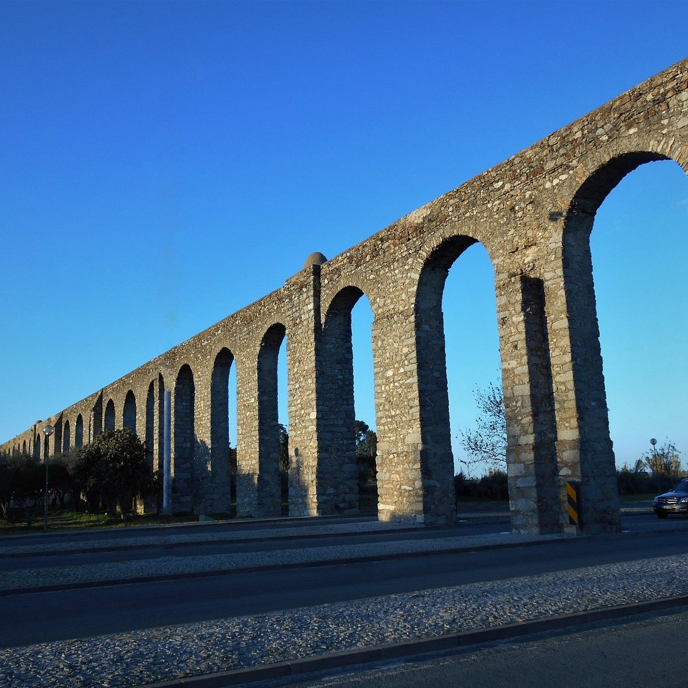
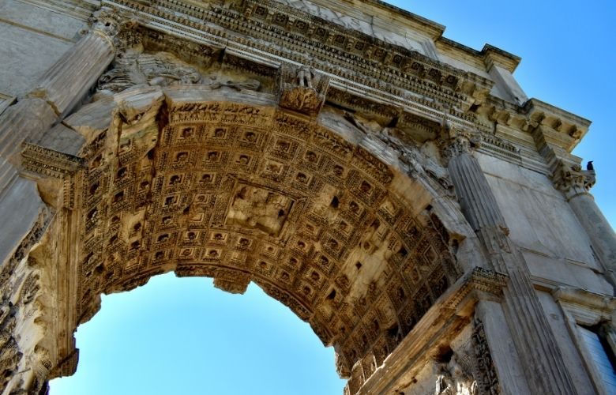
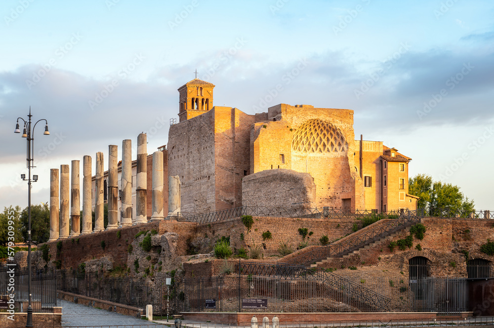

RNN - Roman News Network
Destaques
Arquitetura
Esculturas
Quem somos
Grande inauguração do coliseu

Roma celebra inauguração de novos aquedutos
Criação de templos deixa locais confusos

Novos arcos triunfais são construidos em Roma
Construção do Templo de Marte Ultor é finalizada

Domus Aurea é edificado em Roma e Nero volta a acusar cristãos pelo incêndio